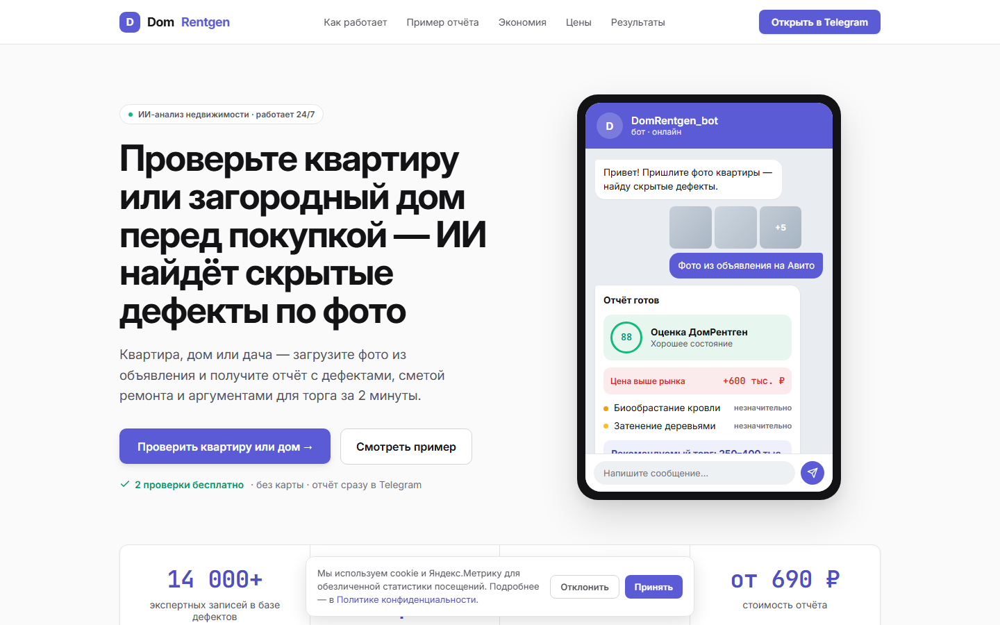
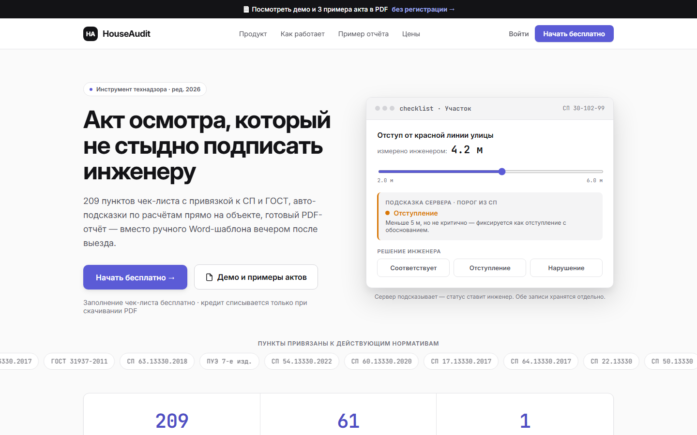
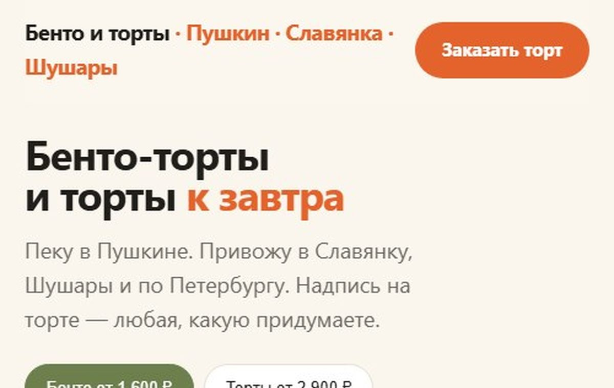
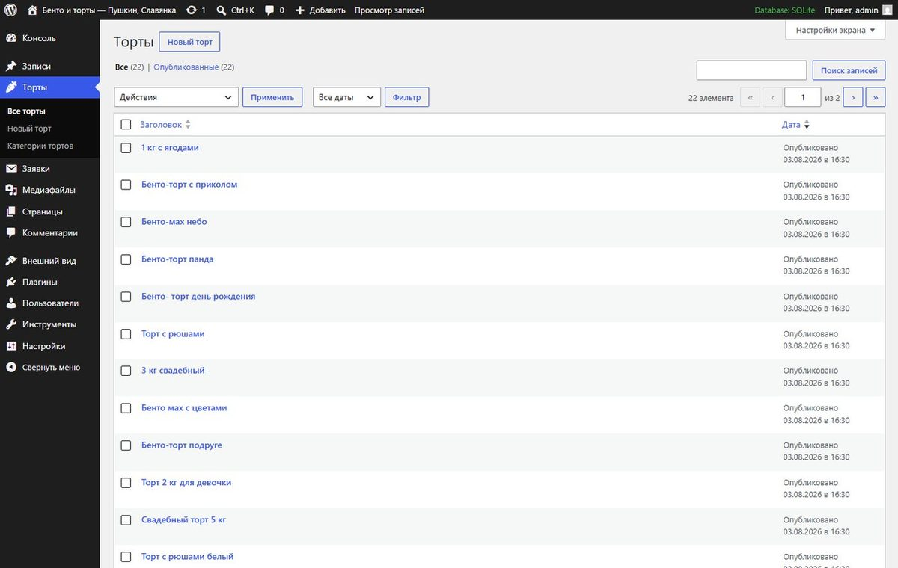

КЕЙСЫ
Что я сделал
Это наши собственные продукты и демо-проекты: от структуры и текстов до дизайн-системы, вёрстки и админки. Поэтому показываю не картинки, а работающие сайты и логику решений.

DomRentgen — ИИ-проверка недвижимости по фото
Сервис находит скрытые дефекты по фото из объявления и выдаёт отчёт с аргументами для торга. Главная задача лендинга — снять возражение «это же нейросеть, она придумает».

HouseAudit — инструмент технадзора для инженеров
Чек-лист осмотра с привязкой к СП и ГОСТ, PDF-акт прямо на объекте. Лендинг для профессиональной аудитории, которая не прощает маркетингового тона.

Кондитер в Пушкине — лендинг под заказы
Витрина плитками, где дорогие работы крупнее, цены прямо на первом экране и фильтры по поводам. Собран на реальных данных: фотографии и цены перенесены из витрины ВКонтакте.

Тот же сайт на WordPress — с панелью управления
Своя тема вместо шаблона, отдельный тип записей «Торты» с полем цены и приём заявок в админку. Добавить новую работу можно как обычный пост — без разработчика.

КАЙДЗЕН — интернет-магазин автозапчастей
Магазин под ключ со своей темой вместо шаблона. Подбор детали по артикулу, OEM-номеру и коду двигателя написан отдельно: штатный поиск OpenCart на такие запросы не отвечает, а в запчастях ищут именно так.